Go Back
Viscous Hypersonic Flows – Boundary layer Theory – Self Similar Solutions
Abstract
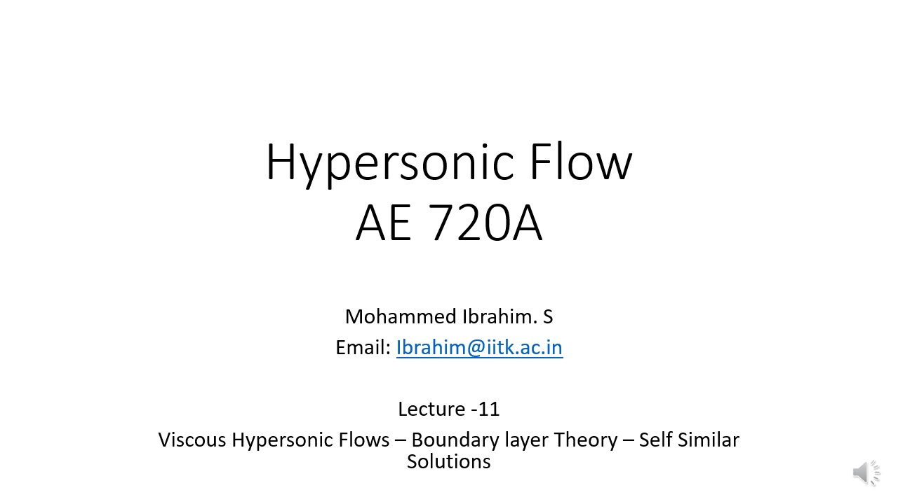
In this lecture we shall be discussing about the self similar solution obtained for Hypersonic Boundary Layer Equation.
These solutions are applicable for subsonic and supersonic compressible flows also. The major differecne between the hypersonic and subsonic or supersonic boundary layer is the Viscous dissipation. Because the fact that we are talking about boudnary comes decause of Viscocity, and hence velocity gradients. But in subsonic there aren't any Viscous Dissipation, however in Hypersonic there are so.
Because of which the large kinetic energy gets converted into thermal energy and chemical reactions follows after that. During chemical Reaction we do not consider the fluid to be calorifically perfect.
However, viscous dissipation is not very significant form low and morderate hypersonic mach numbers. (eg. scarmjets)
Therefore it is important to understand the effect of Thermal Conductivity and Viscous Dissipation, when studing the hypersonic boundary layer at high mach number. Combined effect will be discussed in this lecture.
Self Similar Boundary Layer
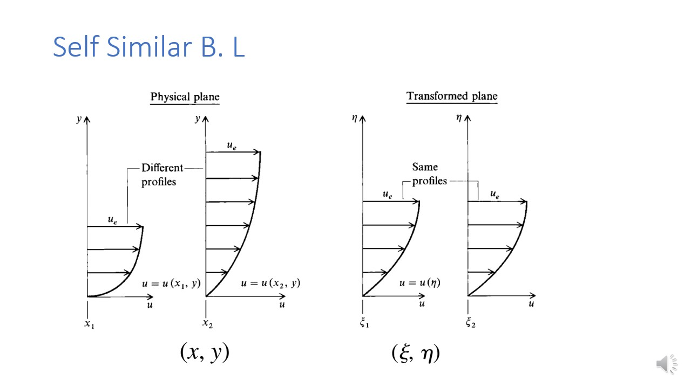
Now we study the two dimensional boundary layer. in general, properties of the boundary layer varies in both X and Y direction. By property we mean the velocity and pressure, and temperature ect.
The velocity profile is also not going to be the same in x1, and x2, as could be seen in the figure above. Now we are going to change the cordinate axis such that the profile will appear to be the same for "\(\see\)".
And this could be seen in the above slide.
Now once the cordinates are transformed the boundary layer will be the function of \(\eta\) only (transformed y direction). And such boundary layers are called self-similar boundary layer, and solution are called self similar solution.
Why does self similarity occur at the first place?
As the boundary layer grows downstream, if the relative importance of forces (inertia, viscosity, pressure gradient) remains proportionally the same along the flow direction, the flow "scales" uniformly. This consistent force balance creates similar flow structures at different locations, just scaled versions of each other.
The growth of the boundary layer thickness and the changes in velocity within it follow predictable patterns (e.g., they grow as some power of downstream distance). Because these scales grow proportionally, the shapes of velocity and temperature profiles remain similar when nondimensionalized by these scales.
In essence, the flow "forgets" its initial or upstream conditions beyond some distance and settles into a state where the boundary layer structure is repeated in form, just scaled by local thickness and velocity. This practical physical balance of effects and environmental consistency leads to mathematical invariance (scale independence) and self-similarity.
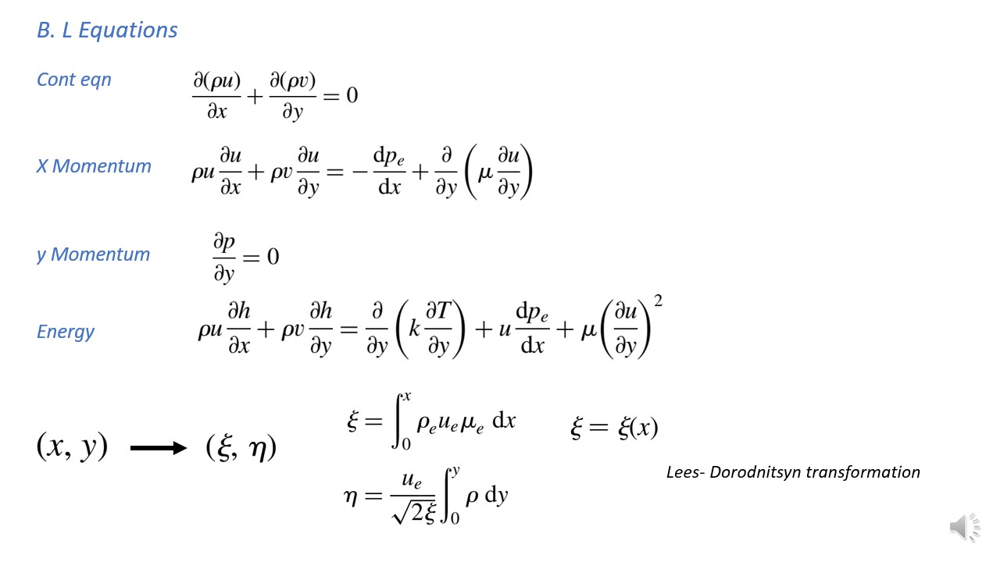
Now we transform the boundary layer equation that we have worked on from the previous lecture, from (x,y) cordinate system to (\(\see, \eta\)) space (using the transformation given in the bottom portion of the silde).
In this transformation, \(\rho_e, u_e, and \neu_e\) are all the properties at the edge of the boundary layer, and they are all functions of X, and therfore \(\eta\) is also the function of X. On the other hand, we have represented eta in terms of zee.
There are four steps involed to transform the variable. Lets see them one by one.
Step 1: Getting dell by dell X and dell by dell Y
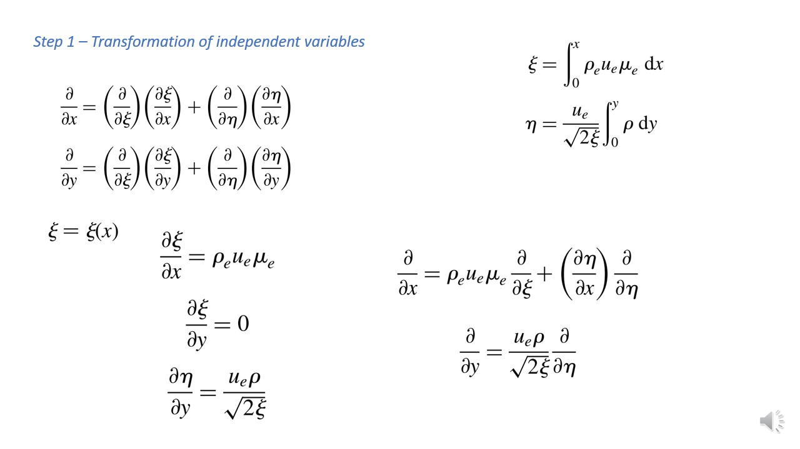
X and Y in the givernign equation appears in it's derivatives, and hence we will have to represent those derivatives wrt X and Y in terms of \(\eta\) and \(\zee\). And this is done using chain rule as could be seen in the slides.
Note that \(\eta\) is function of y from the integral and is dependednt on x by \(\zee\). And we have seen in the previos slide that \(\zee\) is the function of x only.
And once we have found the individual derivative of \(\zee\) and \(\eta\) wrt x and y, it could be substituted into the chain rule expression and full relation of partial derivatives of x and y in terms of \(\eta\) and \(\zee\) could be obtained. Now we have the expression for dell by dell x and dell by dell y.
introducing new independent varibales (Streamfuction)
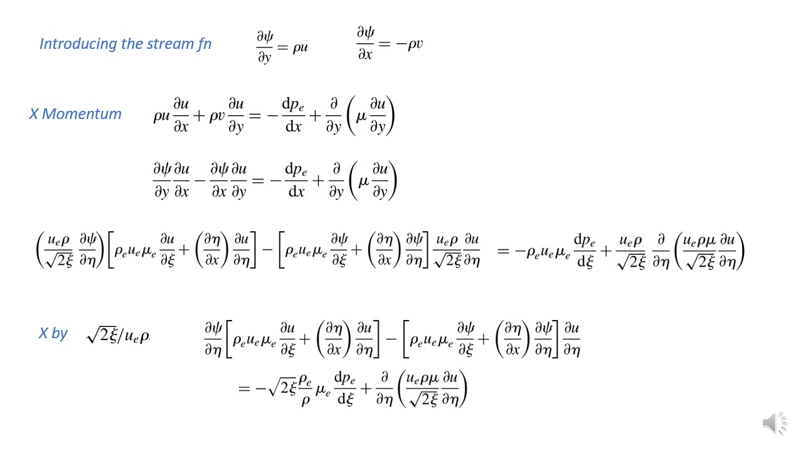
First the definition of streamfunction is written.
Next the values of \(\rho \times u\) and \(\rho \times v\) is substituted in the momentum equation using the definition given above. Note that parial derivatives of velocity is not been replaced by sytreamfunctions.
And now from the exprerssions of (dell by dell x) and (dell by dell y) obtained in the previous slide. And the partial derivatives of streamfunction and velocity could be changed.
Now we have boundayr layer equation in temrs of U,V,\(\psi\) and \(\eta\) and \(\zee\), and we have got rid of independent variables x, and y.
We will still have them but only as a part of jacobain.
Step 2 : Transformation of Dependent Variable

Now we will define a function f in \(\zee\), \(\eta\) space such that it's derivative is the ratio between \(\frac{u}{u_e}\).
We know that \(U_e\) which is the velocity at the edge of the boundary layer is the function of \(\zee \) only.
Now with this knowledge we then calculate the partial derivative of velocity wrt transformed space. Take a look at the governig equation we have got to in the previous slide. Now by introducing this new variable nothing has really chnaged. Just instead of u we have f now.
Step 3 : Relation between \(\psi\) and f
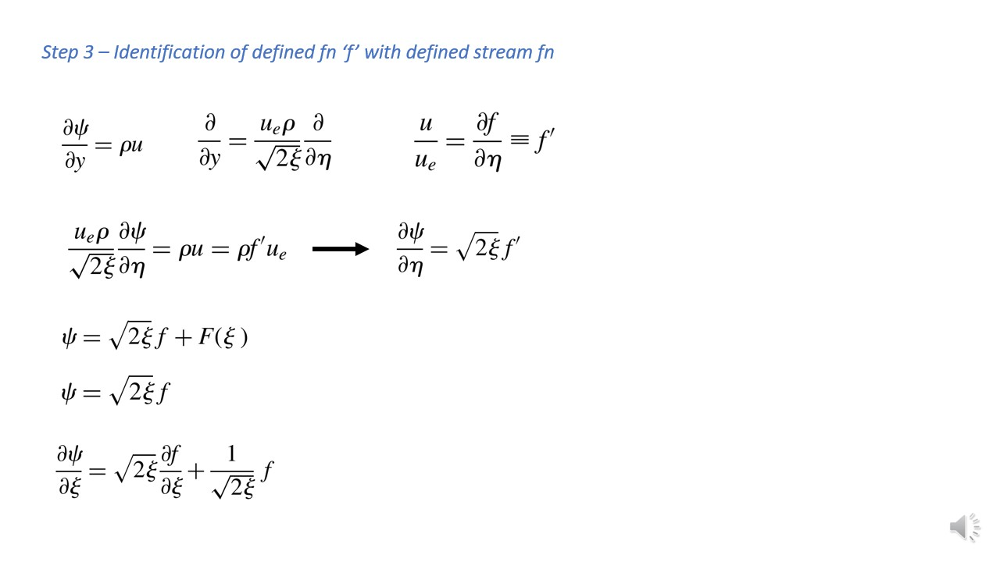
We have introduced the variable \(\psi\) in terms of U, and V. And then we have introduced the variable \(f\) in terms of velocity. now lets connect botht he variables using the above formulation. And this could be done as follows.
Definition of streamfunction is given above,
From the first slide dell by dell y is given above,
And from the previous slide definiton of f is given above.
Now with all of that, we first write the dell \(\psi\) by dell y in terms of \(\eta\) and\(\zee\). Then we substitute the value of velocity u in terms of f. And then we integrate the expression for \(\psi\) in terms of \(\eta\).
\(F(\zee)\) is an arbitary function iof \(\zee\). Recall that value of streamfunction at the body surface should be equal to zero. And since at the body surface f = 0 (u = 0), we will need to have f(\(\zee\)) = 0 for \(\eta\) = 0, which means for all \(\eta\) and \(\zee\), the value of F is zero. And hence we have got the equation of streamfunction as shown.
This gives us the relation of \(\psi\) anf f. And with this we could find the derivative of \(psi\) wrt \(\zee\) and \(\eta\). (we see that \(\psi\) is not a function of \(\eta\).)
X component of momentum equation in terms of f, \(\psi\), \(\eta\), and \(\zee\)
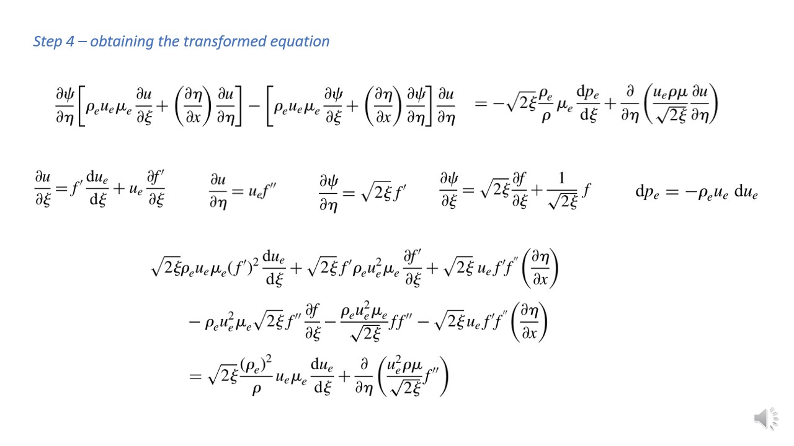
We have obtained the above shown equation for x momentum in equation as soon as we have figured out how to write dell by dell x and y in terms of dell by dell \(\eta\) and \(\zee\). All the varibales as can see are in temrs of \(\eta\) and \(\zee\).
And now from the obtained partial derivaitves of velocity in terms of f, and derivative of streamfuynctio from it's exprsssion obtained, we could substitue it in the above equation. And this will change it to the equation shown.
Note that in the above we have used the euler equation to get to the pressure (as said the pressure inside the boundary layer could be obtained from that at the edge, given by euler equation).
Final Transformed Boundary Layer Equation
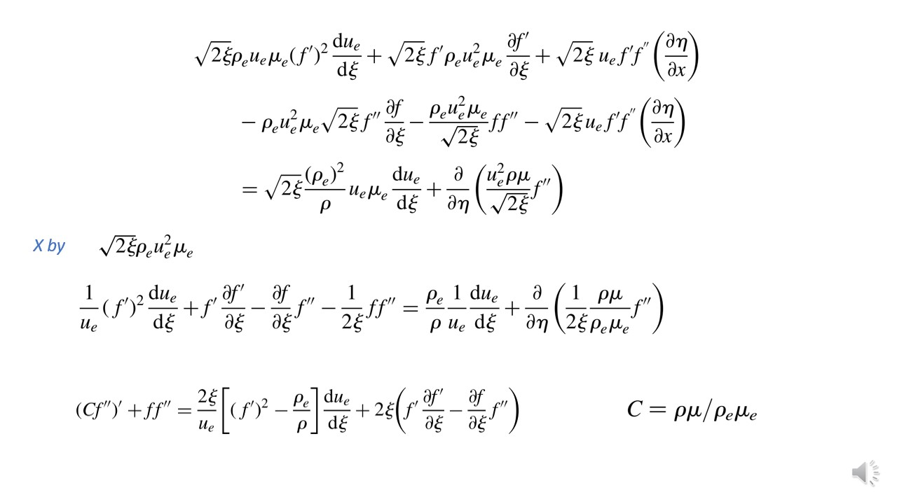
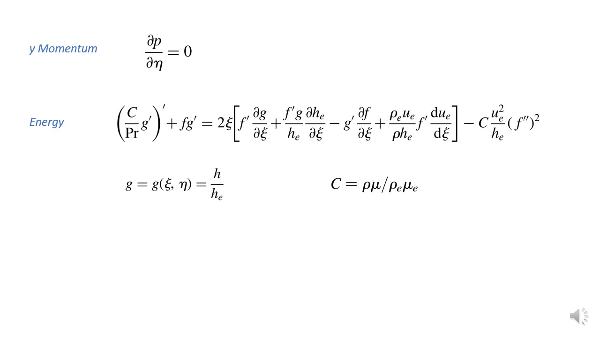
After further simolification we get the above expression. This equation we ahve got is the X momentem boundary layer equation for compressible flow. And this is obtianed for the transformed \(\zee\), \(\eta\) space.
In a similar way the equation for Y-momentum and Energy could be obtained for the above equation.
Boundary Condition in Transformed Plane

At \(\eta = 0\) (which ia at the wall), value of stream function will be zero (f = 0), and velocity will be zero (f' = 0). And value of enthalpy at wall (Temperature at wall) will be equal to Wall Enthalpy (Wall Temperature).But this is when the B.C is dirichlet.
However if the wall is insulated the heat flux at the wall will be zero. And this means derivative of g w.r.t wall will be zero.
At the outer edge the value of velocity will be equal to the free stream values and hence at \(\eta = \infty\), F' = 1 (u = \(\u_e\)), and g = 1 (T = \(\T_e\)).
The final expression for solution is given below. And this is after we have got f,g. Pressure is already known to us from the invicid case. And T and \(\rho\) could be claculated using enthalpy and pressure, as shown.
From the graph we could see that the solution is not self similar since the profile is infcat function of streamwise location.. Self similar solution are special case, that will be seen in the upcoming lectures.
Skin Friction
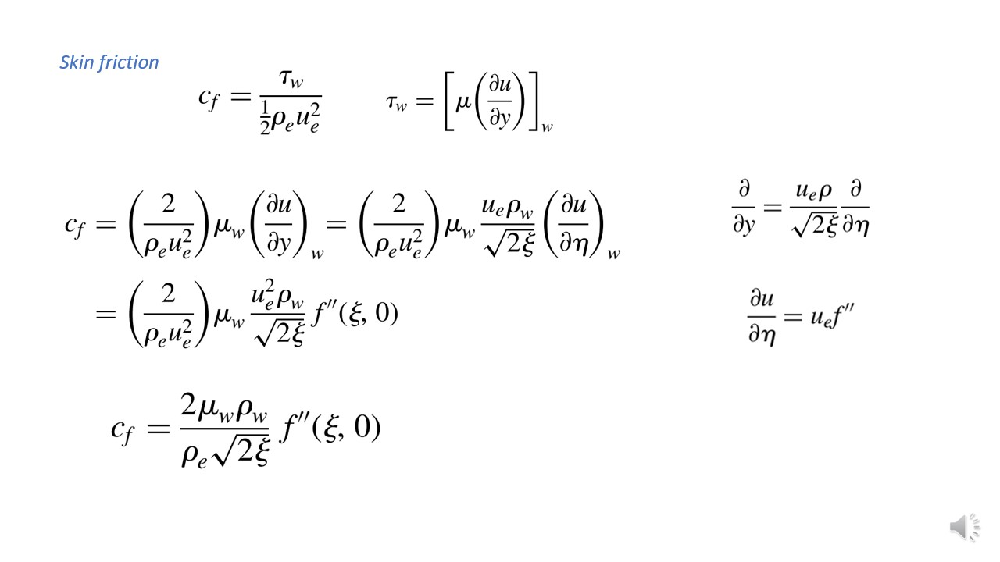
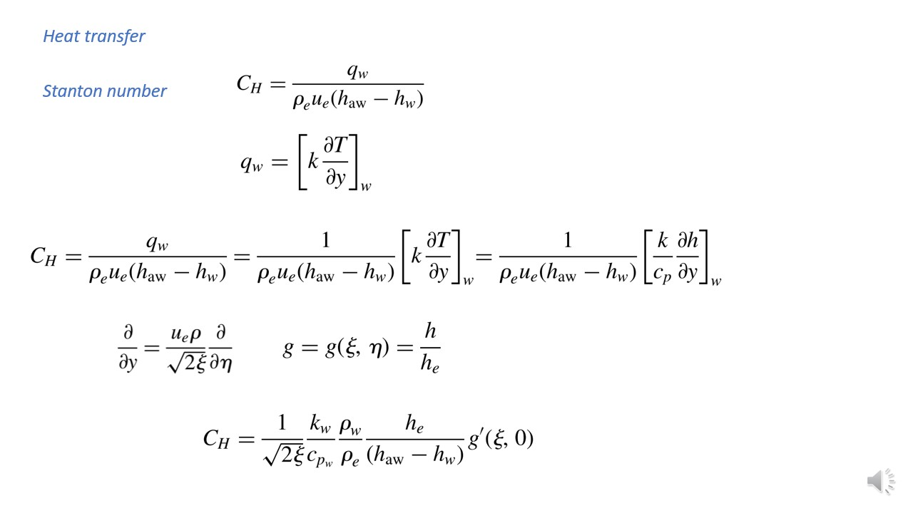
We cna get the enthalpy gradient and velocity graidien t at the wall, and this would give us skin friction and heat flux at the wall.
Given is the expression of skin friction at the trasnformed cordinate space.
The heat transfer coefficient also known as Stanton Number is given as above. Here \(h_{aw}\) is the adibatic wall enthalpy, and \(\h_w\) is the wall enthapy. And \(q_w\) is the heat transfer rate to the wall given by the fourier law.
Everything is wirtten in terms of transfoered cordinates. And liekwise Expression Stanton Numbe rcould be obtianed in terms of transformed cordinates.
Summary
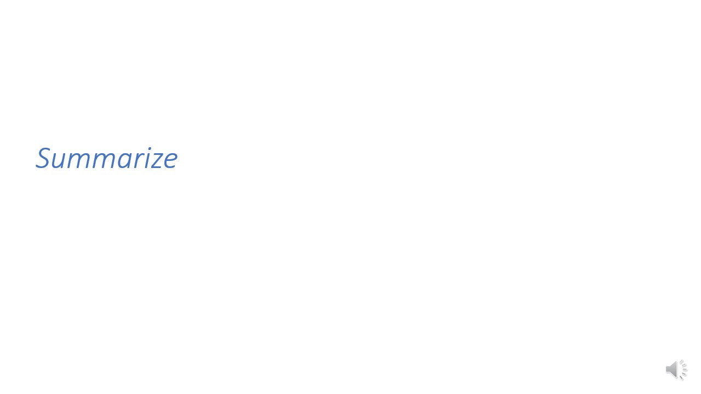
Solutions are still non self similar.
Top of the Page